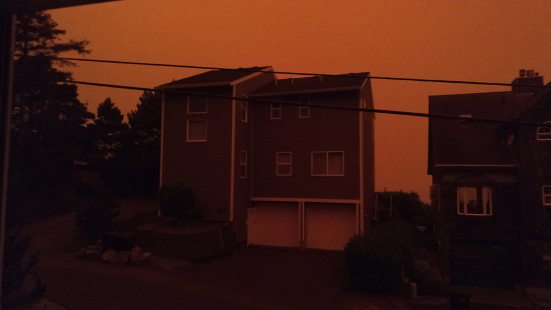

Ope...A Life
-7
The Echo Mountain Complex Fire took place over a week or so in 2020. This entry begins on 6 September. Not my best writing, but it's too gosh darned long to rewrite while being important enough to want to remember. Not all the links below work anymore. The video above was taken by Dale Voris. It shows what the only highway over the coastal range for thirty miles in either direction looked like during the wildfire.
#ope #pnw
I
On Monday night - after having spent countless hours barbecuing, drinking, and lazying a beautiful, sunny Labor Day holiday away - we went to bed. Since I couldn't fall asleep right away, like my partner in crime did, I stayed up for a while and read. Around midnight, the power started flickering on and off a couple of times and by 1:30 in the morning the power had gone completely. When I finally turned in around three the power remained out.
Despite the fun and exhausting Labor Day we'd both had, we woke up early on Tuesday to get a jump on the week and in doing so we glanced outside to see the sunrise, as we are wont to do when we wake up early. The fog off the ocean mixed with the early morning sun gave a delightful red-orange glow to the world. Simply gorgeous. Great way to start the work week.
The better half went to take the trash out to the curb for the normal Tuesday pickup.
"That's not fog," she said. "It's smoke."

I should mention that I'd heard the wind pick up when I was reading in bed, and since I like to sleep with the window open, I'd occasionally smelled smoke. Just before dozing off, too tired to finish the Stephen King story I was enjoying, I'd shut the window because of it. I'd just assumed the smoke was from Tripper (more on them later - think vacationer) bonfires on the beach even though we had a burn ban in effect for the entire county - rare during the even-busier-than-the-normally-busy-summer-on-the-coast weekends - think the three day-ers: Memorial Day, 4th of July, and Labor Day. The city and county get beau coup bucks during even slowish weekends on the coast and Trippers love them some beach bonfires, so if there was a burn ban during one of the busiest weekends of the year there was good reason for it.
"It's smoke," she'd said. I went outside and sure enough. Smoke. We knew areas of Oregon were burning, that's unfortunately normal and not much of anything to worry about here on the usually very moist coast. We're used to being smoked out a couple of times a year from fires as far away as California, Washington, and Canada.
Since the power was out from the strong winds (also not rare on the coast, our house has to have a roof rated for winds of up to 120 mph, unfortunately power lines' limits are much lower) and the smoke was up, we made sure all of our windows were closed, turned on data on our phones, and got back to making coffee (always have a battery back up on the coffee maker, natch), grabbing laptops, logging into VPNs, and getting down to the business of figuring out where we wanted to sit in our living room while we worked.
We'd just settled into the chair-and-a-halfs when our phones blew up with chimes and beeps and vibrations. "Did you hear..." "Have you seen..." "The fire..." "It's unbelievable..." And it was unbelievable. Overnight we'd gone from beautiful and mild and cool, enjoying the sunny three day weekend with nothing to worry about to beautiful and hot and a one thousand acre fire just a couple of miles away.
The strong winds came from the east, which is rare, and the coast was due for almost ninety degree weather, which is extremely rare, and it had been so very dry for so many months, which is absurdly rare - summer is not the rainy season on the Oregon Coast, but that's just because during fall and winter and spring we get so much rain that the rain we usually get in summer seems like almost nothing, but this year it didn't just seem like almost nothing, it actually was almost nothing.
During that first day we monitored the official sites for information - city, county, and state authority websites, Facebook pages, and Twitter accounts. The winds, high temps, and dry conditions were hampering containment efforts. All of Oregon's biggest helicopters which could be used to drop water on fires were in Afghanistan. Sirens continuously warbled, whooped, and waaaaaah'd, dopplering their way through the city. Fire crews were short on availability given all the other wild fires going on. The fire advanced.
Grim news for the home team.
That night we went to bed, power still out and windows still closed, and by morning the fires - two fires actually, Echo Mountain Fire and Kimberly Mountain Fire - combined to form one fire: Echo Mountain Complex. Echo Mountain Complex had jumped the containment lines due to the still strong winds from the east and stupid dry conditions on the ground. About two thousand acres were burning. East winds meant it was roaring our way. Dry conditions and lack of resources meant there was little be done about it.
II
The fact that timely, life and limb critical information is distributed primarily through Facebook is a kick in the teeth. A shot to the gut. A slap to the face. A stomp of the groin. Goddamn motherfucking Facebook. A user interface not so much designed by professionals as released upon an unwitting citizenry from a laboratory of deranged scientists...a horrible wounded slime-ridden thing lurching toward all of us in the wee hours of the morning.
That is to say that Facebook sucks. Trying to get actual authoritative information in a timely manner sucks even harder. Trying to find information more than a few hours old (archived information, natch) like sources of food or shelter or evacuation routes sucks the hardest. Yes, that information is eventually available on one of the multitude of local, state, county, tribal, and federal sites one needs to be paying attention to during disasters, but for some reason the info is always put on Facebook first - sometimes hours before actual websites are updated and emergency emails/texts are sent out.
Fuck Facebook.
Wednesday we woke up to a much less red-orange sky and power. Power! Check the fridge, nothing spoiled. Warm shower taken. Fire up the internets, start looking for updated info on the fires. One big fire now. Two thousand acres. Containment not possible. Evacuations zones being determined.
It's at this point that two things happened.
- The power went out again. Phone data was down to 3g or nothing at all. Uncivilized or intermittent. No reliable updates from the outside world possible.
- We decided we didn't want to be like those people in Dante's Peak, you know, the ones who were told there would be a town meeting in twelve hours to discuss what was going on with the exploding volcano and then when everybody met in the high school basketball court an earthquake hit and the volcano erupted. The people asking if they had to wait to leave. No, Susan, you don't have to wait. The volcano is going to erupt! Earthquakes are going to strike! Fire will rain from the sky and the ground will part beneath you! Get out the damned town! Don't wait twelve hours for a meeting on it! Leave! Grab stuff and go, baby! Don't let that door hit you on the way out! Be gone! Anyway, yeah, we didn't want to be those people.
Last we'd heard the fire was unstoppable and heading our way so we started packing the car as if we weren't going to be coming back. Kitty fixings (litter, food, meds, favorite toy) and human fixings (food, water, clothes, meds, paperwork - yes I was born, yes we were married, yes we are citizens, yes I have seven punches on this Burgerville card - a wedding pic, dad's harmonica, mother-in-law's ring). We were looking for places to bug out to based on air quality. The coast was all in the unhealthy range at the time so we wanted to find a way over the Coastal Mountain Range and into the Willamette (rhymes with damnit) Valley. The valley, unfortunately, was also on fire. The best air quality we found was near Portland - that's not a sentence one gets to type very often - it was at "moderate."
Evacuation zones showing evacuation levels had been established for a couple of hours. Level three was the north part of the city, Level 2 was a small bit in the middle of the city, and Level 1 was on the south side. We live on the south side. Throughout the morning levels 2 and 3 we're creeping further and further south. Since we didn't want to be extras in a cheesy 90s disaster flick, we planned to amscray within the hour.
It should be noted here that I say "city" but what we really are is a town of about 9,000 people - 30,000 during the big tourist months and 20,000 or so during the slow months. Interesting fact, our town has more hotels and vacation rental dwellings than any other city on the coast between San Francisco and Seattle.
Anyway, while looking for any last things to scrounge in the house before our evacuation, I happened to look out the window and see a Tripper across the street.
"Tripper" is a combination of the words "vacationer" and "tripping." Trippers are on a vacation (trip) and they be trippin'. Hard. Trippers are those vacationers who leave all good sense back home when they come to the coast. The ones who spend so much time staring at the beautiful Pacific Ocean while behind the wheel of a car that they drive into a tree. The ones who think burying a bonfire with sand is a good way to put it out (see number 9, beach bonfire). The ones who, in this specific instance, had come to the city, yesterday, while a forest fire blazed out of control not two miles away, filling the air with nigh unbreathable white smoke and gray ash.
The Tripper had been standing outside by the garbage cans for a little over half an hour watching an eternal line of cars go by with confusion in his eyes. I really didn't want to go outside. I really wanted to stay in and keep breathing properly. He looked so confused, though. He didn't seem to know what was going on. I really really didn't want to go outside.
I went outside and was about to wave hello when he said, "Is the garbage truck coming today?"
"Probably not," I replied looking around at the heavy smoke and swirling ash, wondering how he had been outside for over thirty minutes when I wanted to vomit after fifteen seconds. "There's been an order to evacuate parts of the city.
"I have a fishing charter booked for today," he said.
"The city," I repeated, "is evacuating."
"I want to go fishing."
"They're probably closed. Big fire heading our way from the north. You can't go north."
"What's going on with all these cars?"
"They are evacuating. They can't go north."
"Evacuating? Can I at least go down to the beach?" He asked, pointing north.
For the sake of my sanity and my lungs, I wanted out of this conversation. And fast. "I'm not trying to tell you what you can and can't do. There is an evacuation order for parts of the city. The fire is coming from the north. Fast. You can't go north." I said, pointing to the north.
"Are you evacuating?"
"Yes," I said, waving while turning around and heading back inside. "Good luck!"
I never saw what happened to the Tripper. Five minutes later when we joined the line of cars heading south, he was nowhere to be seen. Sometimes I think he wandered inside, grabbed his wife and stuff, and joined the evacuation. Other times I fear he walked back outside to wait for the garbage truck before heading down to the beach access to build a bonfire.
III
I thought it'd be hard to fit all the stuff we deemed necessary to get by with if our house burned down with everything in it into a four-door sedan. Turns out I was wrong. We got everything packed in under an hour (including Tripper talking time) with room to spare.
It was a gosh darned orderly and civilized evacuation given that there was only one road out of town. One. Literally one. That wasn't on fire. Living on the coast is many things, but accessible it ain't. Vehicles were letting each other in at intersections, people were driving carefully, and everyone was obeying the instructions of the emergency responders. It took us about an hour and fifteen minutes to make the (usually) thirty minute drive to the next big city down the coast (population 10,680). Once there we hooked a left to go over the Coastal Mountain Range and into the valley.
The entire drive down the coast, and the entire drive over the Coastal Range and into the valley for that matter, was chock full of smoke and ash. I was hoping that the smoke would ease up in the mountain passes, but it mostly didn't. We kept the car's climate control system turned off except when it got too hot, then turned it on only briefly using recirculated air, however, if you have to evacuate hearth and home because of wildfire, I heartily recommend doing so in a 2010 Ford Taurus SHO: big trunk to hold all worldly possessions, decent cabin space to hold two monkeys and a feline, and ventilated seats to help keep you cool when you don't want to turn on the climate control with massage function to help relieve the stress of the moment. Oh, and radar cruise kicks tush in an evacuation, just set it to the speed limit and let the car accelerate and brake itself in stop-and-go traffic.
Oddly enough, during our first couple of hours on the road, we'd seen about a dozen motorcycles. I didn't imagine they were having a very good time of it, but my mind was mostly put at ease when we stopped to help one pulled over to the side of the road in the middle of the Coastal Range. I got out to ask if there was something we could help with and he responded, "Just stopped for a smoke." And indeed he had. While smoke and ash billowed and wafted around us like a snow storm in fog, he turned toward me and I saw a cigarette hanging out of his mouth. I took a beat staring at him, told him good luck, and hopped back in the car, which is when I heard, "just throw on a nicotine patch and breathe heavily while riding through the smoke, for goodness sake" from the back seat where the cat whisperer was taking good care of Great White.
My cat whisperer was pulling double duty on the trip, cat whisperer to keep kitty calm, and coms expert, using her phone to get updates on air quality indexes and locations of other fires from official sites and friends who had scattered to the four corners of Oregon. Air quality looked poor pretty much everywhere except Bend and Hood River/The Dalles. Both were pretty long drives, Bend being on the other side of yet another mountain range - the Cascades. We just needed a place to crash with air quality that wouldn't immediately melt our lungs. The closest we could come to that was a place outside of Portland called Woodburn.
We evacuated a wildfire and found sanctuary in a place called Woodburn.
The La Quinta Hotel in Woodburn, OR to be specific.
We'd actually been having a hard time finding a hotel. About 500,000 Oregonians were under one of the three levels of evacuation with about 40,000 actually evacuated. That's a lot of people looking for temporary shelter at the same time. Nevertheless, we ended up staying at the finest 2-star hotel (which allowed pets) that money could buy.
After unloading everything we needed for the stay we crashed on the bed and monitored our county's website, the air quality index website, the evacuation zone site for the county we ran away to, the evacuation zone site for the county that was really really close to the one we ran away to, the Facebook page for the Oregon Department of Forestry's Echo Mountain Complex page, the Oregon Department of Transportation's road information site, and Woodburn's wildfire site while Great White wisely hid under the bed, taking a much deserved break from it all. Poor thing.
A quick note of appreciation to the staff at the La Quinta Woodburn, they were all very kind and professional, and that was without them knowing we were fleeing wildfires. Everyone staff member we interacted with while there were complete rock stars.
IV
When using the La Quinta Woodburn as your base of operations while trying to flee wildfires which are burning about a million acres of the state you live in certain things come into focus:
- Wildfire smoke sucks. Seriously sucks. The longer we stayed at the hotel, the worse the air quality got. At one point there was a reading of just over 1000 AQI south of Salem, OR. Technically, anything over 301 is Hazardous, and Hazardous is the worst rating air quality can get. Basically this means that your safest course of action for breathing south of Salem was to start your car and suck on your tailpipe.
- When your entire state is on fire, and the state above you is on fire, and the state below you is on fire, and the states to your right are either on fire or have air quality as bad as yours because of all the smoke from your wildfires blowing their way, and the states to your left aren't actually states but rather just one big ol' ocean where you won't be able to breathe at all unless you're a whale which makes you wonder if maybe they had the right idea in going back to the ocean and evading even the merest possibility of wildfires completely that you realize staying put is sometimes your best option.
- Even when the AQI at every point of your state is well into Hazardous territory, the a/c unit at your local La Quinta will filter most of it out. During our four night stay we never smelled any smoke in our room despite AQI levels that could corrode concrete.
So we whiled away the days and nights in our hotel room, keeping an eye on where the fires and smoke were going, staying in touch with friends and coworkers trying to escape said fires and smoke, watching cable TV for the first time in years - good gravy, the commercials! so many commercials! - and trying to get some work done while wondering if we'd have a house to go back to.
V
There's a strange kind of zen limbo attained when you're stuck in a hotel room for days - monitoring numerous authoritative information sources to see if your house has burned down, to see if you might need to run for your life because of one of the other wildfires burning in your state, and to check if the air quality readings at any given moment are better or worse than those on, oh, let's say, Venus - all while watching reruns of Dirty Jobs and House Hunters on basic cable.
Thankfully, however, the Echo Mountain Complex Fire started coming under control due to lower winds, higher humidity, and the absurdly amazing efforts of wild land firefighters and other emergency personnel.
By Saturday we considered going back home (Level 3 evacuees couldn't go back home for nearly two more weeks, but Level 1 and 2 folk could go back whenever they wanted since they'd never had to leave at all) but were told by friends who hadn't left (and had already returned) that the power, gas, and internet was still intermittent. Since we weren't ready to give up the power'd and warm shower'd charms of our cozy little La Quinta cuarto for our ice cube-less, unheated domicile on the coast we thought we'd give it another night to see what a fresh morning brought.
The fresh morning came earlier than I'd originally planned. It turns out that besides bringing cleaner air than the valley (Unhealthy for Sensitive Groups on the coast vs the valley's still Hazardous/Very Unhealthy levels), stable power/gas/internet, and a fairly under control fire, it brought a bunch of texts from everyone we knew telling us about these really nifty developments. After considerately thanking them for the information, I may have less-than-considerately sent them the following text, "Why are you all up so early? Natural disaster! Threat to life and limb! Threat to everything you own! The kind of potentially life altering emergency that might make you reevaluate every single life choice you've ever made! Take an extra hour or two of sleep on a Sunday, for goodness sake. I know....I know...your kids, right? That's what benadryl or a little nip of whiskey is for. Oh yeah....and good morning all. :)." At any rate, we were heading home.
The trip home was pretty bad - visibility in the valley was down to about 30 yards due to wildfire smoke which made driving on I-5 a bit of a challenge; there were many roads closed so we had to keep detouring around fires and emergency personnel; and our poor 2010 Ford Taurus SHO, which had so faithfully delivered us from the wildfire, didn't seem to have the same enthusiasm when heading back toward it. Turns out after we got home, the SHO decided to break in what will most likely be stupidly expensive and incomprehensible (at least to me) ways, probably because of all the smoke and ash, but darned if I know for sure. I anxiously await the final diagnosis and prognosis with clutched checkbook and credit cards as this is being typed.
Home. It was wonderful to see our home still standing, scorch-mark free, if perhaps a little stale on the air quality side of things (I hesitate to know what the AQI inside of our house was before we started airing it out). Little tip for you: when the air quality outside isn't the greatest but you want to air out your house, get a furnace filter with a MERV 13 rating, strap it to the back of a box fan, and let it blow, baby, blow.
Oddly enough, the driveways of the vacation rental houses around us were full. It turns out Trippers had started coming back to our little beach town on Saturday, even without power, gas, or internet (meaning no warm showers, cooked food, seeing at night, or Netflix) available. What was available when they returned? Air you could basically chew. There were almost no stores or restaurants open, and the ones that were open were helping with the relief efforts for the 293 displaced families from the area, but for some reason, come they did, hopefully with their own groceries, entertainment, and oxygen tanks.
Trippers, man. Trippers.
We started unpacking. My fellow flee-er of forest fires handed me something. I said, "Thanks." She handed me a second thing. I said, "Twice." She handed me a third thing. I said, "Thrice." She handed me a fourth thing. I said I didn't know how to say "Four" in a fancy way and would she please stop handing me things. Despite my recalcitrance, we eventually finished unpacking, cleaned the house, aired it out, and settled into our comfy furniture while Great White settled onto her comfy monkeys.
We were fortunate to come out of this with about an extra grand of expenses, the possible necessity of a new (to us) car, the occasional unexpected whiff of wildfire smoke, and a life returned to as normal as life gets during a 2020 pandemic election year. Far too many people, however, are going to have to deal with insurance folk while wondering how they're going to get and keep a roof over their head, how they're going to keep themselves and their family fed, and how their kids are going to be able to go to school either online or off.
Postscript
A month later.
The People: FEMA, The Red Cross, the state and county, and lots of businesses and folk local, national, and international are doing what they can to make life as decent as possible for the approximately 300 families that lost everything in the Echo Mountain Complex Fire, which was about 2500 acres of just over a million in Oregon to burn in early September. There are those that aren't doing as decently as possible: people who have property damage that isn't total and people who had no property to begin with.
The Coast: The first twenty seconds or so of this news report shows and describes what it was like the day of the first evacuation orders. So much orange. So much red. So many cars. One way out. So many vacationers trippers (with kids and pets). On the fucking beach. On fucking holiday. "Breathing." "Air." This is what it looked like when trying to drive down the only road out of town to the valley before it became completely impassable
The Car: Turns out our car has three catalytic converters and oodles of delicate sensors to regulate the fueling of its 365 horsepower twin turbo engine. Lotta stuff for a friggin' Ford Taurus. All the jostling around out here on their "roads" (see more below) along with all the smoke and ash seems to have fried parts of it to the tune of lotsa money. We got it - him, we name our cars, natch - fixed but are currently reviewing our vehicular needs.
We originally bought the car for the long paved roads of the Midwest.

It eats up Midwest miles in tush heated and ventilated and massaged comfort. Radar cruise. Auto brights. BLIS. AWD for inclement weather and a nice big Sony sound system to listen to over the sturm und drang.
The PNW, as it turns out, has many gravel roads where ground clearance and road quality is an issue. Heck, they even use beaches as state highways out here.
In order to use these kinds of roads and perhaps better runaway the next time a wildfire or earthquake or tsunami - why are we living out here again? - hits the coast we may desire something a little more gravel and dirt capable.